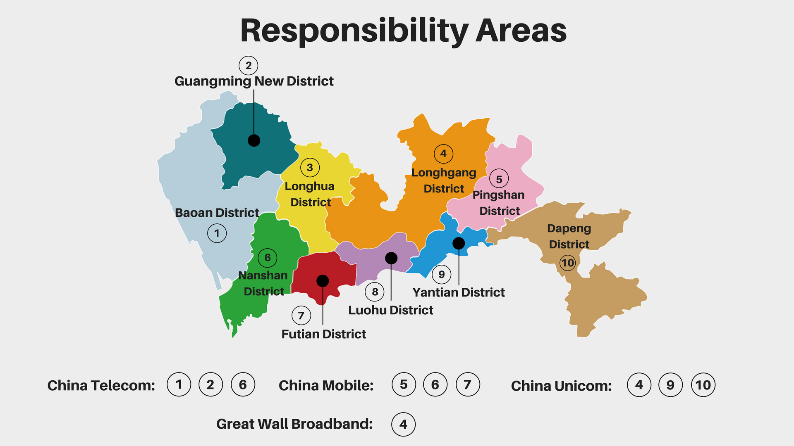

Investigative Project
LI Yujie
LIU Huiyan
GAO Yue
LI Yuquan
LIN Sihan
XU Mingyan
oing through the entry port in Luo Hu, passing the huge, modern Luo Hu Square, crossing the grand city hall, procuratorate office and skyscraping buildings, and slipping into an off-street corner, you will see a shabby and crowded complex: Luo Hu Cun, an urban village in Shenzhen. Liu lived there.
Liu Huayang, 27, came to Shenzhen as a manufacturing worker. He rented a 10-square house in this “notorious” place which is for the poorest people in this city, dirty and messy. But the cost is so “f**king low” that he couldn’t move, he said.
Meet the “Black” Broadband
ccording to Shenzhen Official renting guidebook in 2017 , its renting fee is nearly three times lower than the average. Other daily necessities are also cheaper: five yuan per kg for grape; ten yuan for a nice breakfast and 80 yuan per month for a broadband service, all of which is nearly half the normal price in Shenzhen, one of the most expensive cities in mainland China.
Liu bought a 50 yuan per month broadband service - cheapest among all - on the first day of his arrival. The broadband adlet blots the corridor of the buildings he lived, writing “Hurry up to have our service, fast and cheap” and “Scan this QR code right now”. With the logo of mainland giant telecom company on, he scanned the QR code, added a personal account as a friend on Wechat, a Chinese messaging app, and the internet service was settled in two days.

“It’s just ... too fast. We arranged an appointment but when they came, they didn’t wear a working suit and finished the whole process just by inserting a telephone wire, a telephone wire!” Liu said, “No contract and No receipts!”. Several days later, he found the internet speed was just two megabytes per seconds - 50 times slower than what it should be. Other several days later, he asked the telecommunication company staff to repair and they told him the whole residents in this building are using one account, one IP address.
That’s illegal broadband, a common problem for all the urban villages.
Comparing with other metropolis of China, Shenzhen has lagged far behind in optical fiber network coverage, where the penetration is about 23%, while it is over 50% among other counterparts such as Beijing and Shanghai.
Besides, over a span of many years, urban villages have been infested by illegal broadband, hanging overhead like intricate spider webs. The main problem of these underground item consists of low speed, common IP addresses which are hard to be identified, and fire risks.
By the end of 2017, in Shenzhen, the number of its users has exceeds 10 million which accounts for one-fifth of the whole, according to the official documents from Shenzhen Communication Administration.

Low-cost courses in urban villages became favorable living places for migrant workers.


“Resurgence of illegal broadband
tarting from 2016, the Shenzhen Communication Administration has vowed to overhaul the city’s broadband infrastructure and operation models. The police and those telecommunication companies have initiated crackdowns on illegal broadbands last year. On the first day of the crackdown actions, 11 hideouts of illegal broadband was crashed and seven suspects were captured.
China Telecom, for example, a state-owned telecommunication giant which is responsible for three districts, has cleared 16 illegal optical cables and more than 3,000 users, according to the report of Shenzhen Communication Administration.
In each responsible areas, the company is expected to help investigate the illegal broadband. But Lu Dan, the senior engineer from China Telecom said it’s difficult for them to tell whether the broadband is illegal or not because they can’t know the number of users of the same IP address if they didn’t go to the actual place.
They have removed the limit of how many devices could use the netflow by one account, and the private company which rents the netflow from them are legal, said by Lu.
Even if the residents find they are using illegal broadband, it’s hard to report it and get the problem solved. When Zhu, a resident in Tang Lang village in Shenzhen, called the police and Communication Administration after his broadband line was cut for several times. And finally he only got a reply that they can’t deal with it.
According to Shenzhen Consumer Council, the council won’t consider any complaints without a formal subject, such as illegal broadband, which is not officially registered.
Si Tu, a resident living in Luo Hu village, complained that few weeks after the government’s clearing action, the lines of illegal broadband appeared again on the wall.
Shenzhen Communication Administration admitted that after they installed legal lines in the pilot areas, such as Ding Tou village in Nanshan, some illegal broadband provider destroyed those facilities and returned again and again.
Higher price from the agents
which possibly used to be illegal providers
fter the administration conducted several actions, it appears that the number of unregistered broadband in urban villages has decreased a lot, but the real situation doesn’t change much.
Yang, a 24-year-old living in Dabu Village in southeast Shenzhen, has been suffering from the broadband service for several months.The broadband lines in Yang’s flat was repeatedly set by companies and cut by the landlord. After one month without broadband service, lines was finally installed. But when Yang went to the business hall of the company to register for her broadband, the staff told her that they even didn’t know the lines were laid in her building.

Phoning the number given by the landlord, Yang found that what she called was a real staff of China Telecom, but the broadband service he sold, bundled with a phone card, was 50 yuan more expensive than the business hall.
“This is definitely an unfair bundling sale,” said Yang.
Lu said that any person who has legal identification and business license could require service from them, the state-owned giant company.
Du Xiang, director of Internet Marketing Management Section in Shenzhen Communication Administration, explained that some broadband providers who used to be illegal have signed a corresponding contract with legal companies to transfer them out of the hit list, but they secretly kept some users in their own hands, selling a higher price to them.
Vicious competition and potential monopoly
nder the operation aiming to remove illegal broadband, the administration allocated different “responsible areas” to four telecommunication giants and ordered these companies to send their own staff, not the agents, to deal service with residents in the pilot area.
China Telecom took charge of Yang’s village. But just several days after she acquired service from the company, the lines were cut again by the landlord. Even after the police came, the result was just returning the money—no internet service available for a whole month.
“There are several operators fighting for contracting rights in different areas, and the service provider in the same area could change frequently,” said Yang.
Last year, the broadband connection she just bought from China Telecom, was destroyed by another company which newly got the right to run service in her building.
“Such thing is not rare at all,” said Yang, “It’s not my choice to use which company’s service and even within the same company, different correspondents would have conflicts with each other.”
Du, from Communication Administration, said that, most of the time, the decision was not made by residents but by the property management company or landlords.
The agent company could cooperate with one of those telecommunication companies and reject all other operators to come in; Some even laid the lines by their own and charge legal broadband companies with a high management fee, Du said.
“If the monopoly exists because of the property management company, our department can’t handle it,” said Du.

To eliminate them is difficult
hu, 34, a migrant worker, lived in the Tang Lang Village located in the southwest of Shenzhen. He was forced by his landlord to choose the illegal broadband service. Even if he asked the telecommunication staff for help to reinstall a legal one, two or three months later, its lines would be cut off.
His landlord said to Zhu: “Without his permission, what the staff installed is the illegal broadband. Stay here, use my broadband. If not, move out.”

Many landlords in the urban villages cooperate with the illegal broadband service providers for profits. Zhu has tried to call the police and negotiate with the landlord but it didn’t work at all. “Even the telecommunication company has given up our area,” he said.
The landlord owns the whole building. To let the whole residents share one broadband can’t be judged clearly whether it’s legal or not. So the policeman and telecommunication company don’t have any authority on it.
This problem is rooted in China’s dual tenure policy which differentiates the rural and the urban. Zhang Jigang, an associate professor of Urban Planning in Sichuan University said the government can directly supervise the urban while the village committee is the de facto controller of the rural, which requires a complicated process for the local government to intervene.
Soon after, Zhu moved out. “We are homeless people there. I left and there will be another migrant like me to rent this house. The problem will still be left unresolved.”
Most of the residents in an urban village are floating population which accounted for over 62% of the whole population, according to the official document from Shenzhen Urban Planning Academy.
Zhang, the professor, said:“The urban village is the rural land but it’s located in the city and hard to manage, so it will be in a huge mess. Counterfeits, frauds and drugs, many things are happening, especially in the border city like Shenzhen.”